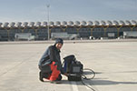

Geophysical Services
Our company offers services, both technical and advisory, in the field of applied geophysics. Our work is used in different sectors, from civil engineering to the exploration of natural resources. The application of geophysics provides additional resources for problem solving as well as a reduction of overall project costs.
Geotechnics
In geotechnical projects the application of different geophysical techniques are useful in:
Study of tunnels
We carry out structural studies for tunnels. Both the emboquilles and the layout, defining the network of faults and fractures and the layout of the different existing lithologies. For high-depth designs using high-resolution seismic reflection
Projects of dams

In dams feasibility study designs, foundations, areas of leakage in reservoirs, areas of loans, landslides or clearings
Linear works

On roads or railway lines and land clearing associated structures are studied
Foundation design
Services are provided for constructions that require the knowledge of dynamic elasticity modules, water tables and ripplability indices
Geological research

It is made the definition of geological structures, arrangement of the different existing lithologies or resistivity measures for earth sockets
Geothermal
The application of different geophysical techniques for geothermal is useful in:
Groundwater

We performed studies to determine the thermal flow gradient
Deep reservoirs

Our services are applied to the structural characterization of thermal sources in deep areas.
Hydrogeology
In hydrogeology the use of different geophysical techniques are useful in:
Study of aquifers
Our services are used in the recognition of aquifers; To determine its location, characterization and water quality (possible contamination)
Structural studies
The geophysical applications allow the definition of a network of fractures and faults, for the extraction of water resources for bottling plants, thermal plants etc.
Archeology
In archeological investigations, the application of different geophysical techniques are useful in:
Urban areas

We serve applications for the detection and mapping of old foundations. And detection of bodies and tools
Rural areas
We use our funeral burial techniques and object search
Auscultation
At the time of auscultation, the application of different geophysical techniques are useful in:
Study in tunnels

We offer applications for the status review and exterior surface coating, under construction and maintenance
Buried services

We use various techniques in the search for oil and gas pipelines, and pipelines. And buried foundations
Studies in linear works

Roads and railway lines are detected for cavity detection. And as quality control of compaction on site
Pollution studies
Investigations are carried out on contaminated soils, hydrocarbon leaks, uncontrolled spills, etc.
Airport studies
For the flooring of the tracks and parking lots are made, as prevention of subsidence
Studies dams
Checks for leaks are made on loose material dams.
Mining
For mining the use of different geophysical techniques are useful in:
Quarry study

We apply our techniques in the delimitation of quarries and the separation between sterile areas of those that present possibilities of containing economically exploitable deposits
Structural studies

Our services focus on the definition of the geological structure of the subsoil, in subcetable areas of exploitation.
Mapping of faults and fractures
Detection of mineral bodies
Use in the search for conducting mineral bodies, sulfur deposits
Detection of mineral masses that by contrast of resistivity.
Search and prospection of mineral deposits (saline diapiros, sulphurs, oil and gas deposits)
Water media
Aquatic projects in the application of different geophysical techniques are useful in:
Harbor and river works
We are immersed in studies for dredging, underwater installations (emissaries, artificial reefs, etc.), control of works, regeneration of beaches, work of underwater archeology, marsh filling, environmental studies in rivers, etc.